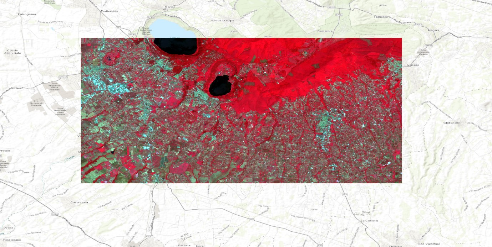
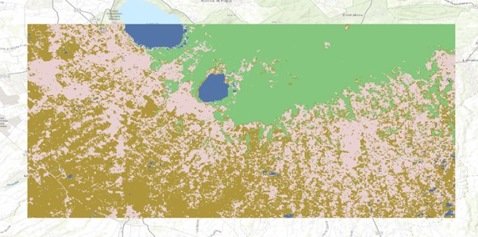
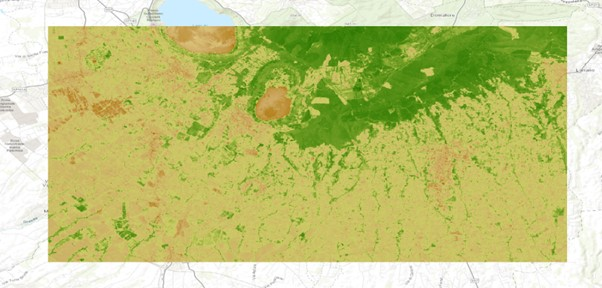

Land Use Classification
I made this map following a lab assignment. include relevant information from your assignment here.
For this land use map, I used the colour infrared with the following bands combination: B8, B4, B3. This band combination emphasizes healthy and unhealthy vegetation. The near-infrared (B8) band, it’s good at reflecting chlorophyll, which is why denser vegetation is red and urban areas are white.
I believe that the Supervised pixel-based classification map is the most accurate and it looks the most professional. Supervised classification allowed me to select representative training areas for each land cover class based on prior knowledge of the region. The resulting map closely matched the actual land cover types I observed on the ground, and I noticed that the map also had fewer misclassifications compared to the unsupervised methods and especially the unsupervised object-based classification.
For this supervised pixel-based classification map, I chose a colour scheme that displays the healthy vegetation as green and the less healthy vegetation as light brown
What is NDVI?
The Normalized Difference Vegetation Index (NDVI) is a widely used indicator for measuring the health, density, and presence of green vegetation using remote sensing data, typically from satellites or aerial sensors
Strengths and weaknesses of Supervised pixel-based technique
Regarding the supervised pixel-based classification, it offers high accuracy because I actively guided and trained the algorithm to match real-world land cover types. The results are also easier to interpret, as the classes are directly linked to known land cover categories. However, supervised pixel-based classification has some weaknesses: preparing and training data can be time-consuming, especially for large or complex images, and the method relies heavily on the quality of the training samples. Overall, I enjoyed using this method since it produced the most accurate and interpretable results, particularly for classes I was familiar with.